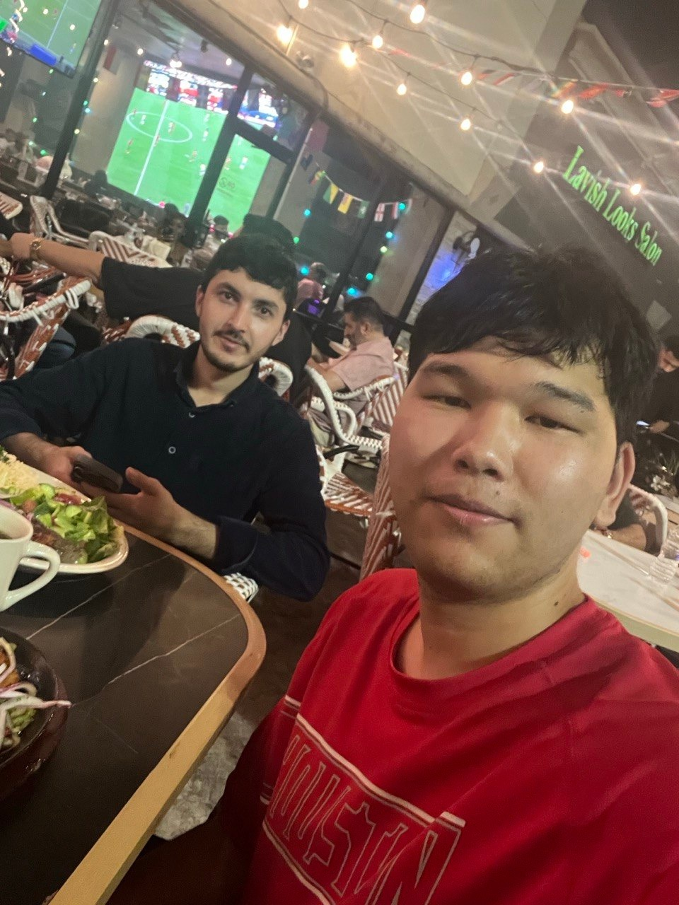

AndarakVillage archive
Sherozbek / Village archiveAndarak ↗
A bilingual journey through Andarak’s history, told through photographs, music and scroll-driven chapters.
Sherozbek & Nursultan / Student portfolio
A village archive, a virtual wardrobe and a learning journal. Explore what we build, how it works and the code behind it.
Explore projects ↓
A bilingual journey through Andarak’s history, told through photographs, music and scroll-driven chapters.
A virtual fitting room that connects shoppers trying on looks with brands tracking demand.
A reflection tool for people who want to understand their habits while learning with AI.
Watch the team’s Gimi project demonstration.
Watch Gimi →